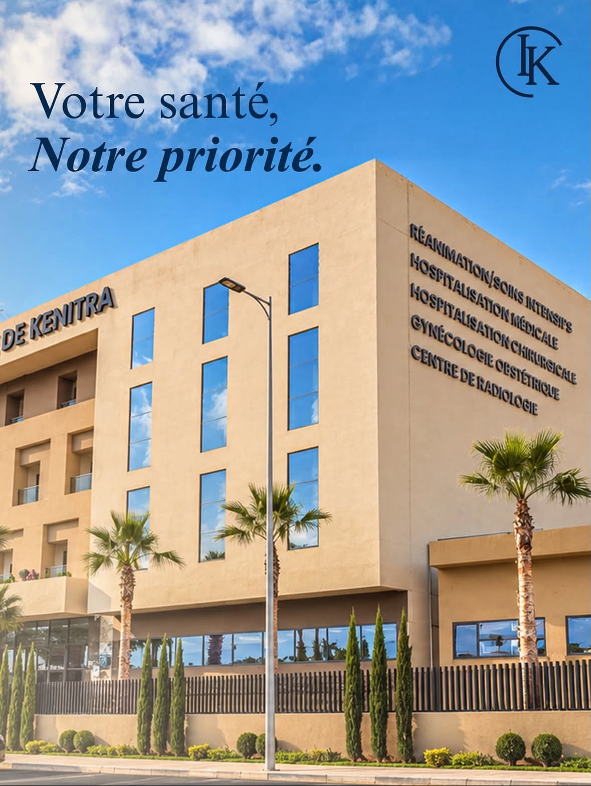

عيادة دولية
Clinique Internationale de Kénitra
مؤسسة خاصة في القنيطرة. يرجى الاتصال بها للتأكد من قدرتها على استقبال حالات الطوارئ.
عرض المزيد من المؤسساتتوجيه صحي
اعثروا بسرعة على الموارد الصحية المفيدة عندما تحتاجون إلى توجيه.
صيدليات الحراسة
تُعرض صيدليتان مناوبتان كل يوم، بما في ذلك أيام الأسبوع والعطلات الرسمية وعطلة نهاية الأسبوع. يرجى التحقق من المعلومات قبل التنقل.
جارٍ تحميل صيدليات الحراسة…
العيادات / الطوارئ

عيادة دولية
مؤسسة خاصة في القنيطرة. يرجى الاتصال بها للتأكد من قدرتها على استقبال حالات الطوارئ.
عرض المزيد من المؤسساتالإسعاف عند الحاجة
لطلب نقل أو للاستفسار العاجل، اتصلوا مباشرة بـ SAD2RED. خدمة الإسعاف منفصلة عن خدمات الطوارئ العمومية.
الاتصال بـ SAD2REDميدوميسيل يقدم معلومات وتوجيهاً محلياً. هذه الخدمة لا تحل محل خدمات الطوارئ العمومية أو قسم الطوارئ في المستشفى.